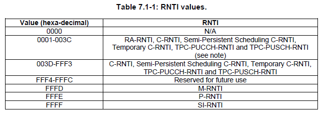
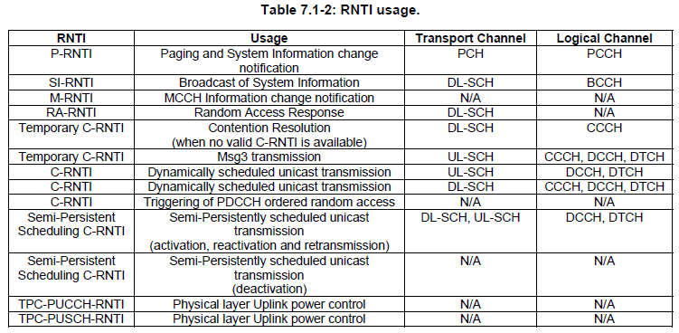

|
LTE Quick Reference Go Back To Index Home : www.sharetechnote.com |
|
|
One of the other numbers which you would very frequently come accross is RNTI. RNTI stands for Radio Network Temporary Identifier. As the name implies, it is a kind of Identification number. Normally we use indentification number to differntiate one thing from all other similar things. For example, your driver's license number let you identify yourself from all other drivers. Social Security number do the same thing as well.
Getting more specifically into LTE, this RNTI is used to indentify one specific radio channel from other radio channel and one user from another user. As you may recall, in WCDMA is a RNTI concept which is carried as part of MAC header to deferentiate one user to another while in communication state. and in WCDMA case it used special channelization code to deferentiate one radio channel from the other.
To my personal perception, RNTI in LTE seems to act as combined role of WCDMA RNTI and WCDMA channelization code (but RNTI has nothing to do with orthogonality.. so this is very superfical analogy. Just take this as an analogy just for understanding high level functionality).
Types of RNTIs
What kind of RNTIs are there in LTE ? The answer is A LOT -:). Followings are the brief summary of RNTIs being used in LTE. More detailed explanation will be updated continuously later.
* P-RNTI : It stands for Paging RNTI. * SI-RNTI : It stands for System Information RNTI. * RA-RNTI : It stands for Random Access RNTI * C-RNTI : It stands for Cell RNTI * TC-RNTI : It stands for Temporary C-RNTI * SPS-C-RNTI : It stands for Semi persistance Scheduling C-RNTI * TPC-PUCCH-RNTI : It stands for Transmit Power Control-Physical Uplink Control Channel-RNTI * TPC-PUSCH-RNTI : It stands for Transmit Power Control-Physical Uplink Shared Channel-RNTI * M-RNTI : It stands for MBMS RNTI
Who issues these RNTI ? Network issues RNTI.
Exactly what does RNTI do for each of those radio channel ? The detailed process differs with the types of RNTIs, but generally speaking all of these RNTI is used to scramble the CRC part of the radio channel messages. It implies that if UE does not know the exact RNTI values for each of the cases, it cannot decode the radio channel messages even though the message reaches the UE intact.
One of the most common questions that I got about RNTI is "There are a lot of different types of RNTI and I don't see any RNTI information on DCI or Higher layer signaling message. Then how can PHY layer know which RNTI it has to use to decode a data ?". The answer is "MAC or Layer 1 controller would instruct PHY on which RNTI it has to use". Then a next questions comes out. "How MAC or Layer 1 controller would know which RNTI to be used ?". There is no explicit algorithm for this, MAC/L1 controller needs to figure it out "based on context". For example, if it is at the subframe where SIB is transmitted, it would instruct PHY to use SI-RNTI. if UE is in connected mode, it may instruct to use C-RNTI, TPC RNTI etc.
Following table from 36.321 shows the range of values which is allocated for each RNTI types.

Following table from 36.321 shows the types of RNTIs and it's usage.

How/Who determines each types of RNTI ?
RA-RNTI : UE determines RA-RNTI as explained in here in the RACH page. T-CRNTI : Network allocate T-CRNTI via RAR as shown in here in the RACH page. C-RNTI : T-CRNTI becomes C-RNTI once Contention Resolution gets passed.
How each of RNTI is used ?
Following is the quotes from 3GPP specification showing how RNTI is used for various cases.. for the exact details, you should see the specification but this partial quote would give you a rough idea of the usage of RNTI.
From 36.212 ---
5.3.3 Downlink control information A DCI transports downlink or uplink scheduling information, or uplink power control commands for one RNTI. TheRNTI is implicitly encoded in the CRC.
5.3.3.1.3 Format 1A Format 1A is used for random access procedure initiated by a PDCCH order only if format 1A CRC is scrambledwith C-RNTI For distributed VRB: .. if the format 1A CRC is scrambled by RA-RNTI, P-RNTI, or SI-RNTI
5.3.3.2 CRC attachment This section explain in detail on how CRC is scrambled by RNTI
From 36.213 ---
5.1.1.1 UE behaviour * δ_PUSCH is a UE specific correction value, also referred to as a TPC command and is included in PDCCH withDCI format 0 or jointly coded with other TPC commands in PDCCH with DCI format 3/3A whose CRC paritybits are scrambled with TPC-PUSCH-RNTI * if the TPC command PUSCH δ_PUSCH is included in a PDCCH with DCI format 0 where the CRC is scrambled by the Temporary C-RNTI * The UE attempts to decode a PDCCH of DCI format 0 with the UE’s C-RNTI or SPS CRNTI and a PDCCH of DCI format 3/3A with this UE’s TPC-PUSCH-RNTI in everysubframe
5.1.2.1 UE behaviour δ_PUCCH is a UE specific correction value, also referred to as a TPC command, included in a PDCCH with DCIformat 1A/1B/1D/1/2A/2 or sent jointly coded with other UE specific PUCCH correction values on a PDCCHwith DCI format 3/3A whose CRC parity bits are scrambled with TPC-PUCCH-RNTI. o The UE attempts to decode a PDCCH of DCI format 3/3A with the UE’s TPC-PUCCH-RNTI and oneor several PDCCHs of DCI format 1A/1B/1D/1/2A/2 with the UE’s C-RNTI or SPS C-RNTI onevery subframe except when in DRX. o If the UE decodes a PDCCH with DCI format 1A/1B/1D/1/2A/2 and the corresponding detectedRNTI equals the C-RNTI or SPS C-RNTI of the UE, the UE shall use the δ PUCCH provided in that PDCCH.
6.1 Physical non-synchronized random access procedure * A preamble index, a target preamble received power (PREAMBLE_RECEIVED_TARGET_POWER), acorresponding RA-RNTI and a PRACH resource are indicated by higher layers as part of the request. * Detection of a PDCCH with the indicated RA-RNTI is attempted during a window controlled by higher layers 7.1 UE procedure for receiving the physical downlink shared channel * If a UE is configured by higher layers to decode PDCCH with CRC scrambled by the SI-RNTI, the UE shall decode thePDCCH and the corresponding PDSCH according to any of the combinations defined in table 7.1-1. The scramblinginitialization of PDSCH corresponding to these PDCCHs is by SI-RNTI. * If a UE is configured by higher layers to decode PDCCH with CRC scrambled by the P-RNTI, the UE shall decode thePDCCH and the corresponding PDSCH according to any of the combinations defined in table 7.1-2. The scramblinginitialization of PDSCH corresponding to these PDCCHs is by P-RNTI. * If a UE is configured by higher layers to decode PDCCH with CRC scrambled by the C-RNTI, the UE shall decode thePDCCH and any corresponding PDSCH according to the respective combinations defined in table 7.1-5. Thescrambling initialization of PDSCH corresponding to these PDCCHs is by C-RNTI. * If a UE is configured by higher layers to decode PDCCH with CRC scrambled by the Temporary C-RNTI and is notconfigured to decode PDCCH with CRC scrambled by the C-RNTI, the UE shall decode the PDCCH and thecorresponding PDSCH according to the combination defined in table 7.1-7. The scrambling initialization of PDSCHcorresponding to these PDCCHs is by Temporary C-RNTI.
|